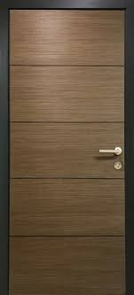

<!doctype html>
<html lang="en">
    <head>
        <!-- Required meta tags -->
        <meta charset="utf-8">
        <meta name="viewport" content="width=device-width, initial-scale=1,
            shrink-to-fit=no">
        <script type="text/javascript"
            src="https://cdn.jsdelivr.net/npm/uevent@2/browser.js"></script>
        <script type="text/javascript"
            src="https://cdn.jsdelivr.net/npm/three/build/three.min.js"></script>
        <script type="text/javascript"
            src="https://cdn.jsdelivr.net/npm/photo-sphere-viewer@4/dist/photo-sphere-viewer.js"></script>
        <link rel="stylesheet" type="text/css"
            href="https://cdn.jsdelivr.net/npm/photo-sphere-viewer@4/dist/photo-sphere-viewer.css">
        <script type="text/javascript"
            src="https://cdn.jsdelivr.net/npm/photo-sphere-viewer@4/dist/plugins/markers.js"></script>
        <link rel="stylesheet" type="text/css"
            href="https://cdn.jsdelivr.net/npm/photo-sphere-viewer@4/dist/plugins/markers.css">
        <script type="text/javascript"
            src="https://cdn.jsdelivr.net/npm/photo-sphere-viewer@4/dist/plugins/virtual-tour.js"></script>
        <link rel="stylesheet" type="text/css"
            href="https://cdn.jsdelivr.net/npm/photo-sphere-viewer@4/dist/plugins/virtual-tour.css">
        <title>Work 5</title>
        <style>
            * {
                padding: 0;
                margin: 0;
            }
            body {
                background-color: #feee;
                font-family: "Sarabun", sans-serif;
            }
        </style>
    </head>
    <body>
        <script type="text/template" id="pin11">
            <div class="text-center">
                <b>ประตูไปที่ไหนก็ได้</b>
                <br>
                <br>
                
                <br>
                <br>
                <p>ประตูอะไรก็ม่าวรู้วว</p>
                <br>
            </div>
        </script>
        <div id="photosphere" style="width: 100%; height: 100vh;"></div>
        <script>
            var viewer = new PhotoSphereViewer.Viewer({
            container: 'photosphere',
            loadingImg: 'https://img.pikbest.com/png-images/20190918/cartoon-snail-loading-loading-gif-animation_2734139.png!bw700',
            plugins    : [
                [PhotoSphereViewer.MarkersPlugin, {
                    hideButton: false,
                    listButton: false,
                }],
                [PhotoSphereViewer.VirtualTourPlugin, {
                    //positionMode: PhotoSphereViewer.VirtualTourPlugin.MODE_GPS,
                    //renderMode  : PhotoSphereViewer.VirtualTourPlugin.MODE_3D,
                    linksOnCompass: true,
                    markerStyle: {
                        html : null,
                        image: './images/mark/mark.jpeg',
                        width    : 300,
                        height   : 600,
                        scale    : [0.5, 2],
                        anchor   : 'top center',
                        className: 'psv-virtual-tour__marker',
                        style : {
                            color: 'rgba(0, 208, 255, 0.8)',
                            transform: 'rotate(20deg)',
                        },
                    },
                }],
            ],
        });
        
        var virtualTour = viewer.getPlugin(PhotoSphereViewer.VirtualTourPlugin);

        virtualTour.setNodes([
            {
                id      : '1',
                panorama: './images/1.jpg',
                thumbnail: 'https://photo-sphere-viewer-data.netlify.app/assets/tour/key-biscayne-1-thumb.jpg',
                name    : 'หน้าโรง',
                links   : [
                    { nodeId: '2',"x": 5320, "y": 1989},
                    { nodeId: '3' ,"x": 0, "y": 1953},
                ],
                markers: [
                    {
                        "id": "marker-qo6ohu4gh68",
                        "image": "https://photo-sphere-viewer.js.org/assets/pin-red.png",
                        "longitude": 0.05,
                        "latitude": -0.195,
                        "width": 32,
                        "height": 32,
                        "tooltip": "ทดสอบ Pin",
                        "content": document.getElementById('pin11').innerHTML,
                    }
                ],
               // position: [180, 25, 3],
                panoData: { poseHeading: -2 },
            },
            {
                id      : '2',
                panorama: './images/2.jpg',
                thumbnail: 'https://photo-sphere-viewer-data.netlify.app/assets/tour/key-biscayne-2-thumb.jpg',
                name    : 'ลานพระ',
                links   : [
                    { nodeId: '3' ,"x": 816, "y": 1837},
                    { nodeId: '1' ,"x": 1968, "y": 2068},
                ],
                //position: [150.156168, 25.666623, 3],
                panoData: { poseHeading: 40 },
            },
            {
                id      : '3',
                panorama: './images/3.jpg',
                thumbnail: 'https://photo-sphere-viewer-data.netlify.app/assets/tour/key-biscayne-3-thumb.jpg',
                name    : 'ลานหน้าหอศิล',
                links   : [
                    { nodeId: '1' ,"x": 5933, "y": 2033},
                    { nodeId: '2' ,"x": 6780, "y": 2019},
                    { nodeId: '4' ,"x": 541, "y": 1978},
                    { nodeId: '5' ,"x": 1937, "y": 2033},
                    { nodeId: '7' ,"x": 8159, "y": 2025},
                ],
                //position: [-80.155932, 25.666498, 5],
                panoData: { poseHeading: 150 },
            },
            {
                id      : '4',
                panorama: './images/4.jpg',
                thumbnail: 'https://photo-sphere-viewer-data.netlify.app/assets/tour/key-biscayne-3-thumb.jpg',
                name    : 'ลานกิจกรรมหอศิลป์',
                links   : [
                    { nodeId: '5' ,"x": 5552, "y": 2013},
                    { nodeId: '7' ,"x": 8004, "y": 2019},
                ],
                //position: [-80.155932, 25.666498, 5],
                panoData: { poseHeading: 328 },
            },
            {
                id      : '5',
                panorama: './images/5.jpg',
                thumbnail: 'https://photo-sphere-viewer-data.netlify.app/assets/tour/key-biscayne-3-thumb.jpg',
                name    : 'ลานศรีฐาน',
                links   : [
                    { nodeId: '4' ,"x": 7817, "y": 2033},
                    { nodeId: '6' ,"x": 2453, "y": 2033},
                    { nodeId: '3' ,"x": 6750, "y": 2033},
                ],
                //position: [-80.155932, 25.666498, 5],
                panoData: { poseHeading: 0 },
            },
            {
                id      : '6',
                panorama: './images/6.jpg',
                thumbnail: 'https://photo-sphere-viewer-data.netlify.app/assets/tour/key-biscayne-3-thumb.jpg',
                name    : 'หอกาฬด้านล่าง',
                links   : [
                    { nodeId: '8' ,"x": 4135, "y": 2033},
                    { nodeId: '5' ,"x": 6301, "y": 2033},
                    { nodeId: '4' ,"x": 7052, "y": 2033},

                ],
                //position: [-80.155932, 25.666498, 5],
                panoData: { poseHeading: 280 },
            },
            {
                id      : '7',
                panorama: './images/3.1.jpg',
                thumbnail: 'https://photo-sphere-viewer-data.netlify.app/assets/tour/key-biscayne-3-thumb.jpg',
                name    : 'ลานหญ้าพิคเนตร',
                links   : [
                    { nodeId: '4' ,"x": 5933, "y": 2033},
                    { nodeId: '3' ,"x": 2243, "y": 2052},
                    { nodeId: '5' ,"x": 428, "y": 2052},
                ],
                //position: [-80.155932, 25.666498, 5],
                panoData: { poseHeading: 328 },
            },
            {
                id      : '8',
                panorama: './images/6.1.jpg',
                thumbnail: 'https://photo-sphere-viewer-data.netlify.app/assets/tour/key-biscayne-3-thumb.jpg',
                name    : 'หอกาฬบินตรง',
                links   : [
                    { nodeId: '9' ,"x": 4863, "y": 2033},
                    { nodeId: '5' ,"x": 6070, "y": 2033},
                    { nodeId: '4' ,"x": 7219, "y": 2033},
                    { nodeId: '6' ,"x": 4100, "y": 2033},
                ],
                //position: [-80.155932, 25.666498, 5],
                panoData: { poseHeading: 280 },
            },
            {
                id      : '9',
                panorama: './images/6.2.jpg',
                thumbnail: 'https://photo-sphere-viewer-data.netlify.app/assets/tour/key-biscayne-3-thumb.jpg',
                name    : 'หอกาฬบินข้าง',
                links   : [
                    { nodeId: '8' ,"x": 3445, "y": 2033},
                    { nodeId: '5' ,"x": 7768, "y": 2033},
                ],
                //position: [-80.155932, 25.666498, 5],
                panoData: { poseHeading: 328 },
            },
        ], '1');


            function hideSayHi(){
                $("#messageSayHi").addClass("animate__animated animate__zoomOut");
            }
        </script>
        <!-- Optional JavaScript -->
        <!-- jQuery first, then Popper.js, then Bootstrap JS -->
        <script src="https://code.jquery.com/jquery-3.3.1.slim.min.js"
            integrity="sha384-q8i/X+965DzO0rT7abK41JStQIAqVgRVzpbzo5smXKp4YfRvH+8abtTE1Pi6jizo"
            crossorigin="anonymous"></script>
        <script
            src="https://cdnjs.cloudflare.com/ajax/libs/popper.js/1.14.7/umd/popper.min.js"
            integrity="sha384-UO2eT0CpHqdSJQ6hJty5KVphtPhzWj9WO1clHTMGa3JDZwrnQq4sF86dIHNDz0W1"
            crossorigin="anonymous"></script>
        <script
            src="https://stackpath.bootstrapcdn.com/bootstrap/4.3.1/js/bootstrap.min.js"
            integrity="sha384-JjSmVgyd0p3pXB1rRibZUAYoIIy6OrQ6VrjIEaFf/nJGzIxFDsf4x0xIM+B07jRM"
            crossorigin="anonymous"></script>
    </body>
</html>